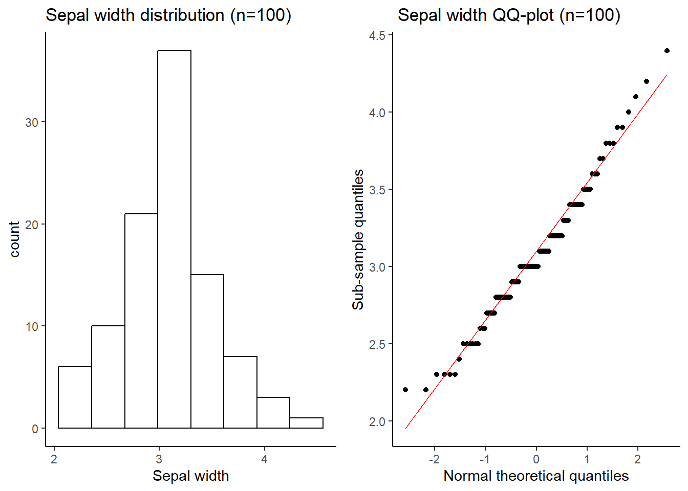
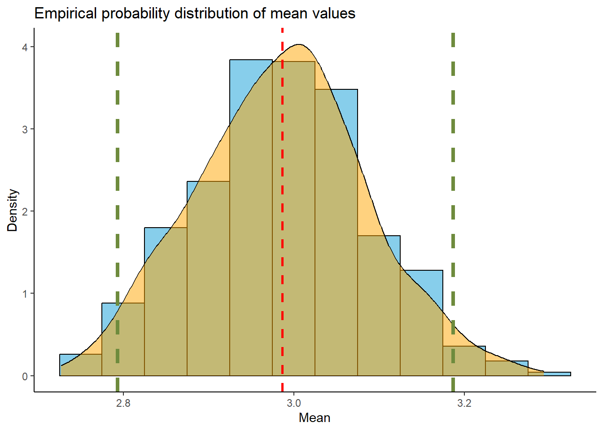

# Load packages
library(ggplot2)
library(gridExtra)Warning: le package 'gridExtra' a été compilé avec la version R 4.2.3library(bootstrap)While studying random variables, it is useful to know which statistical distribution they are following. Such knowledge allows to make inferences about the statistical population when only sub-samples are available. For instance, it is needed in order to calculate confidence intervals around an estimated statistic or to calculate p-values to test hypothesis. In other words, recognizing a statistical distribution of the sampled data is essential to estimate the reliability of estimations.
Many well-studied statistical distributions can be useful in this situation, some of the most famous being the Normal distribution, the Poisson distribution or the Binomial distribution. Despite the diversity of studied distribution, sampled data distribution often differ, whether because they do not follow any studied statistical distribution or because too few data are available making it difficult to recognize any distribution.
In this situation, resampling procedures become interesting. It is a non-parametric statistic which has many usages, such as calculating confidence intervals or estimating p-values. The principle of resampling is to “draw samples from the observed data to draw certain conclusions about the population of interest” (Sinharay 2010). This chapter will discuss three resampling techniques: the jackknife, the bootstrap and the permutation (with a focus on the mantel test).
Before diving into the subject, let’s load some packages:
# Load packages
library(ggplot2)
library(gridExtra)Warning: le package 'gridExtra' a été compilé avec la version R 4.2.3library(bootstrap)To illustrate the following methods, we’ll use the Iris RBase dataset.
# Original dataset
data <- iris
head(iris) Sepal.Length Sepal.Width Petal.Length Petal.Width Species
1 5.1 3.5 1.4 0.2 setosa
2 4.9 3.0 1.4 0.2 setosa
3 4.7 3.2 1.3 0.2 setosa
4 4.6 3.1 1.5 0.2 setosa
5 5.0 3.6 1.4 0.2 setosa
6 5.4 3.9 1.7 0.4 setosaSuppose we’re interested in determining the average width of the sepals in a wild population of Iris flowers. However, it’s practically impossible to measure the sepals of every single flower in the population. Instead, we’ve sampled and measured a specific number of individuals in the field. To simplify, let’s consider our Iris dataset as a representation of the complete wild population (which, in reality, is inaccessible) and select only a small number of individuals to mimic our field sampling.
Let’s first imagine that we only sampled 100 individuals within our population.
# Our real population
irisPopulation <- iris$Sepal.Width
# Randomly sample 100 individuals
set.seed(42)
data_sample <- irisPopulation[sample(1:150,100)]
# Histogram
plot1 <- ggplot()+
geom_histogram(aes(x = data_sample),colour = "black", fill = "white", bins = 8)+
xlab("Sepal width")+
labs(title = "Sepal width distribution (n=100)") +
theme_classic()
# QQ-plot
plot2 <- ggplot()+
stat_qq(aes(sample=data_sample))+
stat_qq_line(aes(sample=data_sample), color="red")+
xlab("Normal theoretical quantiles")+
ylab("Sub-sample quantiles")+
labs(title = " Sepal width QQ-plot (n=100)") +
theme_classic()
# Print
grid.arrange(plot1,plot2,ncol=2)
The sample being normally distributed, we can compute its mean (\(\mu\)), as well as its confidence interval as below:
# Compute sample mean
cat("mu = ",mean(data_sample),"\n")mu = 3.08 # Compute confidence interval
low <- mean(data_sample)-1.96*sd(data_sample)/sqrt(length(data_sample))
high <- mean(data_sample)+1.96*sd(data_sample)/sqrt(length(data_sample))
cat("Lower bound : ",round(low,2), " Upper bound = ",round(high,2))Lower bound : 2.99 Upper bound = 3.17Note: the 1.96 value comes from the normal distribution table to obtain a 95% confidence interval.
Then, we can easily compare this result with the actual mean of our wild population, that theoretically we do not know:
# Compute population mean
cat("mean = ",mean(irisPopulation))mean = 3.057333The mean of our population falls within our confidence interval!
Now, let’s consider that we were only able to sample 15 individuals within our wild population.
# Randomly sample 15 individuals
data_sample <- irisPopulation[sample(1:150,15)]
# Histogram
plot1 <- ggplot()+
geom_histogram(aes(x = data_sample),colour = "black", fill = "white", bins = 8)+
xlab("Sepal width")+
labs(title = " Sepal width distribution (n=15)") +
theme_classic()
# QQ-plot
plot2 <- ggplot()+
stat_qq(aes(sample=data_sample))+
stat_qq_line(aes(sample=data_sample), color="red")+
xlab("Normal theoretical quantiles")+
ylab("Sub-sample quantiles")+
labs(title = " Sepal width QQ-plot (n=15)") +
theme_classic()
# Print
grid.arrange(plot1,plot2,ncol=2)
This time, our sample size is too small, and its distribution is no longer normal. In this very common scenario, what options do we have to estimate a confidence interval around any of our parameters of interest, like the mean? This is where resampling methods get interesting.
This method was first proposed by Quenouille (1949). The name “Jackknife” comes from the fact that it is often referenced as a “quick and dirty” tool of statistics (Abdi and Williams 2010). It means that it is usable in many situations but it is often not the best tool. The technique allows us to estimate a confidence interval for some statistics when the dataset is too small and/or when it does not follow a known distribution.
The main goal of the jackknife method is to calculate a confidence interval around a statistic when classical statistics can not apply to the data.The principle is to create subsamples of the initial sample by successively removing some of the observations. Then, on each subsample, a pseudo-value will be calculated. With all the pseudo-values, it is possible to calculate an estimator of the statistic and to estimate its confidence interval.
The most famous jackknife is the the leave-one-out jackknife (or order 1 jackknife) for which all the subsamples contain all the observations except one. Concretely, for a sample of \(n\) observations, there will be \(n\) subsamples of size \((n-1)\). The \(i^{th}\) subsample will be composed of observations from \(1\) to \(n\) minus the \(i^{th}\) observation.
To illustrate, here is our sample:
data_sample [1] 2.8 2.8 3.2 3.2 2.3 3.0 2.9 3.4 2.8 3.4 2.4 3.0 3.2 3.9 2.5And we can represent some subsamples:
cat("1st subsample : \n",data_sample[-1], "\n")1st subsample :
2.8 3.2 3.2 2.3 3 2.9 3.4 2.8 3.4 2.4 3 3.2 3.9 2.5 cat("4th subsample : \n",data_sample[-4], "\n")4th subsample :
2.8 2.8 3.2 2.3 3 2.9 3.4 2.8 3.4 2.4 3 3.2 3.9 2.5 After creating the subsamples, the next step is to calculate pseudo-values for each of the new subsamples. The formula for pseudo-values depend on the statistic of interest. In our case we want to estimate the mean, the formula will then be:
\[ v_{i} = n\overline{X} - (n-1)\overline{X}_{-i} \]
with the following variables:
| Variable | Meaning |
|---|---|
| \(v_{i}\) | Pseudo value of the \(i^{th}\) subsample |
| \(n\) | Total number of observations |
| \(\overline{X}\) | Mean of the initial sample |
| \(\overline{X}_{-i}\) | Mean of the \(i^{th}\) subsample, corresponding to all observations except the \(i{th}\) |
Let’s write a function which create the subsamples and calculate their pseudo values:
# Function for pseudo-values
pseudo_val <- function(data, theta){
# entry : data = the vector of data to which we want to apply the Jackknife
# entry : theta = function for the statistic of interest
# output : a vector of pseudo values for each subsample
n <- length(data)
mean_init <- theta(data)
pv <- rep(NA,n) #to keep in memory each pseudo value
for (i in 1:n) {
pv[i] <- n*mean_init - (n-1)*theta(data[-i])
}
return(pv)
}To try the function:
# Function test
pv <- pseudo_val(data = data_sample,
theta = mean)
print(pv) [1] 2.8 2.8 3.2 3.2 2.3 3.0 2.9 3.4 2.8 3.4 2.4 3.0 3.2 3.9 2.5The jackknife estimator \(\theta\) of the mean will then be calculated as follow:
\[ \begin{align} \hat{\theta} & = \frac{\sum_{i=1}^{n}v_{i}}{n} \\ \hat{\theta} & = \overline{v} \end{align} \]
It corresponds to the mean of the pseudo values \(v_i\).
# Compute mean of the pseudo-values
mean_pv <- mean(pv)
mean_pv[1] 2.986667The Jackknife estimator \(\theta\) obtained is 3.15. This technique supposes that the Jackknife estimator is normally distributed and its standard error is calculated as follow:
\[ \begin{align} SE_\hat{X} & = \sqrt{\frac{\sum_{i=1}^{n}(v_{i}-\overline{v})}{n(n-1)}} \\ SE_\hat{X} & = \sqrt{\frac{\sigma_{v}^{2}}{n}} \end{align} \]
With \(\overline{v}\) being the mean of the pseudo values (and the jackknife estimator).
# Compute standard error
SE <- sqrt(var(pv)/length(pv))
SE[1] 0.1086132From these we can calculate a confidence interval:
\[ [\, \overline{v} - 1.96 \, SE_\hat{X} ; \overline{v} + 1.96 \, SE_\hat{X} \,] \]
Note: the 1.96 value comes from the normal distribution table to obtain a 95% confidence interval.
Lower bound : 2.77
Higher bound : 3.2The estimated Jackknife mean is \(3.15\) with the following confidence interval : \([2.94\:;\:3.35]\). The real value \(\mu = 3.05\) is captured within the bounds of the confidence interval which indicate the robustness of the estimation process.
On r, functions already exist to automatically execute the Jackknife. For instance, in the package bootstrap (Tibshirani 2019), there is a function jackknife. The function take as entry a vector containing the data (x) and a function indicating which statistic needs to be estimated (theta).
# Package function
bootstrap :: jackknife(x= data_sample,
theta = function(x) mean(x))$jack.se
[1] 0.1086132
$jack.bias
[1] 0
$jack.values
[1] 3.000000 3.000000 2.971429 2.971429 3.035714 2.985714 2.992857 2.957143
[9] 3.000000 2.957143 3.028571 2.985714 2.971429 2.921429 3.021429
$call
bootstrap::jackknife(x = data_sample, theta = function(x) mean(x))The output of the function include the standard error ($jack.se) as describe above. It also include the bias ($jack.bias) which is the difference between the initial sample statistic and the jackknife estimated statistic. It is important to note that the output $jack.values does not correspond to the pseudo values but to the statistic of interest calculated on every subsample. In our example, it correspond to the mean of each subsample.
As seen precedently, the Jackknife allows to calculate a confidence intervall when data are not following a normal distribution and to estimate the bias induced when only a sample of the statistical population is observed. These two characteristic does not only apply to univariate estimators such as the mean. It can be used on correlation coefficients and regression parameters for instance (Sinharay 2010). In that case, each subsample leave one observations out with all its associated variables. The jackknife method is peticularly interesting when it comes to make inferences about variance ratio. It can perform as good as the Fisher test if variables are normally distributed and better if they are not (miller_jackknife?–review_1974).
The Jackknife method was a good tool in the last century as it was easy to apply manually but it is nowaday surpassed by other methods which emerged thanks to the evolution of computers.
This method is not always efficient, it is not recomanded for time series analysis where some time period are successively removed to create the subsample. Moreover it has little succes when it comes to the estimation of single order statistics (specific values in an ordered set of observations or data points) such as the median or the maximum (miller_jackknife?–review_1974). But for this last point, other jackknife can be used such as the deleted-d jackknife which perform better for the median. In this method, subsamples are of size \((n-d)\) and there are \(\binom{n}{d}\) subsamples.
For more informations about applications of the Jackknife you can read the paper: Jackknife a Review by Rupert G. Miller (miller_jackknife?)–review_1974.
Now that we’ve thoroughly explored jackknife resampling in the previous section, let’s delve into another resampling technique: the bootstrap method.
Similar to jackknife, bootstrap aims to estimate descriptive parameters of a sample and assess the accuracy of these estimates for making inferences about the actual population. It is yet another statistical inference method that involves generating multiple datasets through resampling from the original dataset. Essentially, the concept revolves around using resampling techniques to create a probability distribution for a chosen parameter. This distribution, known as the empirical distribution function, serves as an estimation of the true probability distribution of our parameter in the population. In practice, similar to the earlier section, our objective here is to compute parameters of interest from our sample (such as mean, median, or even the \(R^2\) of a regression, among others) and establish confidence intervals around these estimates.
The fundamental difference between jackknife and bootstrap lies in their resampling methodologies. In each of its \(i\) iterations, bootstrap randomly resamples \(n\) elements from an initial sample of \(n\) data points with replacement. This leads to two crucial distinctions from the resampling method employed in jackknife: i) The new samples generated through bootstrap maintain the same size \(n\) as the original dataset. ii) Given the sampling with replacement approach, a particular element can occur multiple times in a new sample or might not appear at all during the resampling process.
After generating these \(i\) bootstrap samples, the intended statistical parameters are computed for each of these samples. As a result, we obtain a distribution of \(i\) data points derived from these samples, forming what is known as our empirical distribution function. Subsequently, the analysis of this distribution allows us to estimate precision, particularly in establishing the confidence interval for our statistical parameters.
If the previous introduction seemed a bit perplexing, don’t worry—we’ll use an example to illustrate this concept.
For this demonstration, we’ll once again consider our non-normally distributed sampling of 15 individuals. Let’s proceed with the calculation of the mean.
# Field sampling mean
mean(data_sample)[1] 2.986667So, we’ve obtained a mean value of 3.15, which is great. However, this mean value can’t be reliably generalized to the entire population because we lack information about the variability induced by the specific individuals we chose to sample. As highlighted in our previous code, we only sampled \(n=15\) individuals in the field. Clearly, this limited sampling isn’t sufficient to confidently assert that our estimated mean is truly representative of the entire population. Hence, it becomes essential to gain insights into the variability of the mean we’ve just calculated. This is precisely where the bootstrap method comes into play.
We’ll now systematically apply our algorithm to resample the initial dataset obtained from our field sampling. This resampling process will be utilized to construct the probability distribution of our mean.
# Fix our number of bootstrap iterations
B = 1000
# Create an empty list to stock our resamplings
bootstrapSamples <- vector("list",B)
# bootstrap resampling algorithm
for (i in 1:B) {
# Randomly sample n elements with replacement
bootstrapSamples[[i]] <- sample(data_sample, replace = TRUE)
}For pedagogical purposes, let’s examine a few resamples while comparing them to our initial field sampling dataset.
# Our original field sampling
sort(data_sample) [1] 2.3 2.4 2.5 2.8 2.8 2.8 2.9 3.0 3.0 3.2 3.2 3.2 3.4 3.4 3.9# A few resampling
sort(bootstrapSamples[[5]]) [1] 2.4 2.4 2.4 2.4 2.5 2.5 2.8 2.8 3.2 3.2 3.2 3.2 3.2 3.4 3.9sort(bootstrapSamples[[777]]) [1] 2.3 2.3 2.4 2.5 2.8 2.8 2.8 2.8 2.8 3.0 3.2 3.2 3.4 3.4 3.4Observe how certain values are repeated more frequently than in our initial dataset. Additionally, note that some values aren’t sampled at all. For instance, the value 2.5 appeared only once in our initial set and consequently was seldom or perhaps never resampled. Conversely, the value 2.8 was more prevalent in our initial dataset and consequently was sampled more frequently
Now, we’ll compute the parameter of interest for each of our resampled datasets. This process will yield our set of \(i=1000\) mean values, which we’ll utilize to construct our empirical distribution in the subsequent step.
# Compute mean for each bootstrap samples
iterationMeans <- sapply(bootstrapSamples, mean)The computation of the distribution for our parameter of interest is complete. We can now proceed to plot it, providing us with an understanding of the variability surrounding our estimated mean value.
# Probability distribution plot
ggplot(data = data.frame(iterationMeans), aes(x = iterationMeans)) +
geom_histogram(binwidth = 0.05, fill = "skyblue", color = "black", aes(y =after_stat(density))) +
geom_density(alpha = 0.5, fill = "orange") +
geom_vline(xintercept = mean(data_sample), color = "red", linetype = "dashed", linewidth = 1.5) +
labs(title = "Empirical probability distribution of mean values",
x = "Mean",
y = "Density") +
theme_classic()
Hence, this probability distribution provides us with insights into the variability around the mean value estimated from our field sampling. As anticipated, and as indicated by the red dashed line, this distribution is centered around the estimated mean value.
Recall the primary objective of the bootstrap method: to assess the precision of our parameter estimation to make inferences about the broader population. To accomplish this, we’ll utilize the bootstrap percentiles. For instance, suppose we aim to calculate the 95% Confidence Interval. In this case, we’ll allocate 5% of the error evenly on both sides of our distribution, corresponding to the values at the 2.5th and 97.5th percentiles in our empirical distribution.
# Get percentile 2.5%
quantile(iterationMeans, probs = c(0.025,0.975)) 2.5% 97.5%
2.793333 3.186833 And thus, we’ve successfully obtained our confidence interval for the mean estimation: \(2.97 \leq \overline{x} \leq 3.33\).
For educational purposes, let’s proceed to plot these percentiles in green.
# Probability distribution plot
ggplot(data = data.frame(iterationMeans), aes(x = iterationMeans)) +
geom_histogram(binwidth = 0.05, fill = "skyblue", color = "black", aes(y =after_stat(density))) +
geom_density(alpha = 0.5, fill = "orange") +
geom_vline(xintercept = mean(data_sample), color = "red", linetype = "dashed", linewidth = 1) +
geom_vline(xintercept = quantile(iterationMeans, probs = 0.025), color = "darkolivegreen4", linetype = "dashed", linewidth = 1.5) +
geom_vline(xintercept = quantile(iterationMeans, probs = 0.975), color = "darkolivegreen4", linetype = "dashed", linewidth = 1.5) +
labs(title = "Empirical probability distribution of mean values",
x = "Mean",
y = "Density") +
theme_classic()
The bootstrap resampling method has facilitated the construction of a confidence interval around our mean estimate with a 5% margin of error. Now, let’s compare this interval with the actual value of our Iris population.
mean(irisPopulation)[1] 3.057333The actual sepal width mean of our population falls within the bounds of our confidence interval, which is highly encouraging! Comparing it to the interval estimated using the jackknife method, we notice that this interval is narrower and more precise. Consequently, we’ve effectively inferred information about the population mean in a scenario where we had limited data, made no normality assumptions, and where the standard computation of confidence intervals might not have been sufficiently robust and a
As we’ve seen, bootstrap is a powerful resampling technique used in statistics for estimating the precision of parameters. One of its primary advantages lies in its versatility across a wide spectrum of statistical estimations. Indeed, this resampling technique is applicable to various parameters, such as mean, variance, regression coefficients, and more. Furthermore, this method is particularly robust in handling complex data structure without strict distributional assumptions, meaning that it can easily works with non-normally distributed datasets with little observations, which is really relevant in real-word scenarios. In those cases, bootstrap ends up being more accurate than the standard intervals obtained under normality assumption.
However, one significant concern is its computational intensity, especially noticeable with larger datasets or complex models. Generating numerous bootstrap samples can demand, in certain cases, substantial computing resources. Additionally, bootstrap might display biased estimation of the accuracy of estimates, depending on whether or not the sampling dataset is representative of the actual population.
Overall, bootstrap’s major advantages lie in its broader applicability across various statistical estimations, but which comes with higher computational demands. In contrast, Jackknife might be less versatile, but tends to offer a better computational efficiency and less biased parameters, making it a favorable choice under certain conditions.
This section on the bootstrap method offers a fundamental understanding, providing explicit R scripts for pedagogical purposes. If you find yourself needing to utilize bootstrap, we highly recommend exploring the capabilities of the precedently presented bootstrap R package, which streamlines bootstrap implementation. Moreover, the bootstrap method extends beyond basic parameter estimation, offering various derivatives and applications catering to diverse needs:
Lastly, bootstrap resampling isn’t limited to parameter estimation. It can also be employed to assess statistical tests, a topic we’ll delve into in our upcoming section.